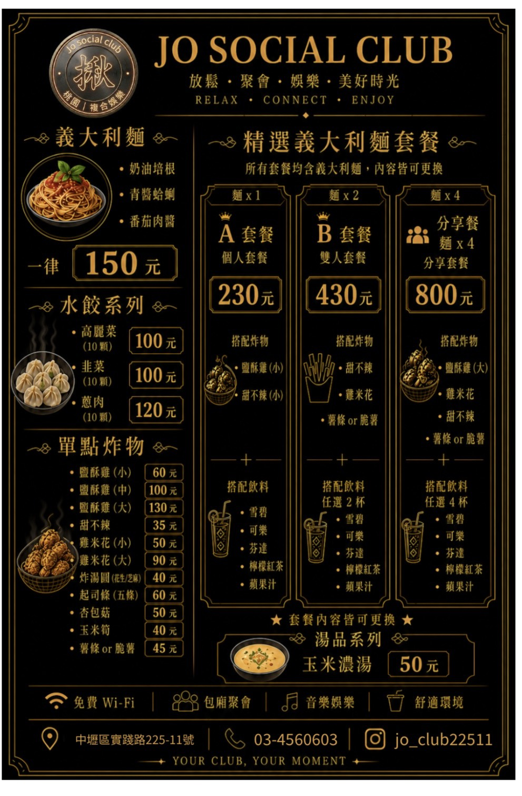
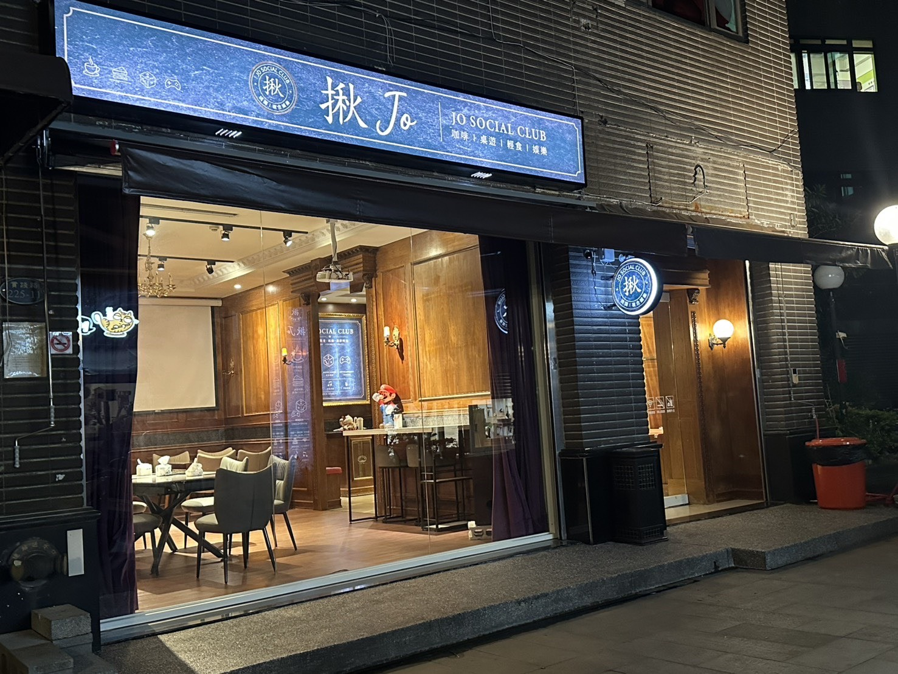
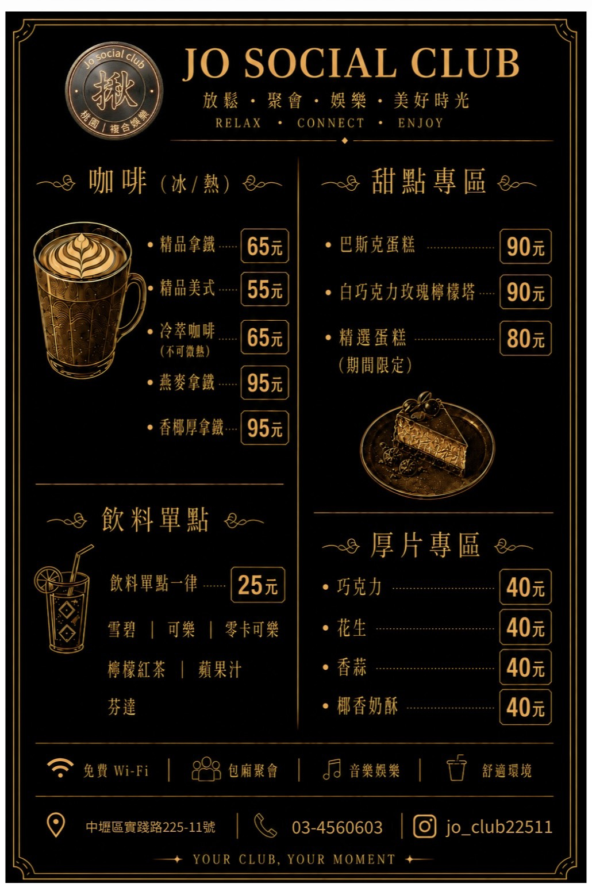
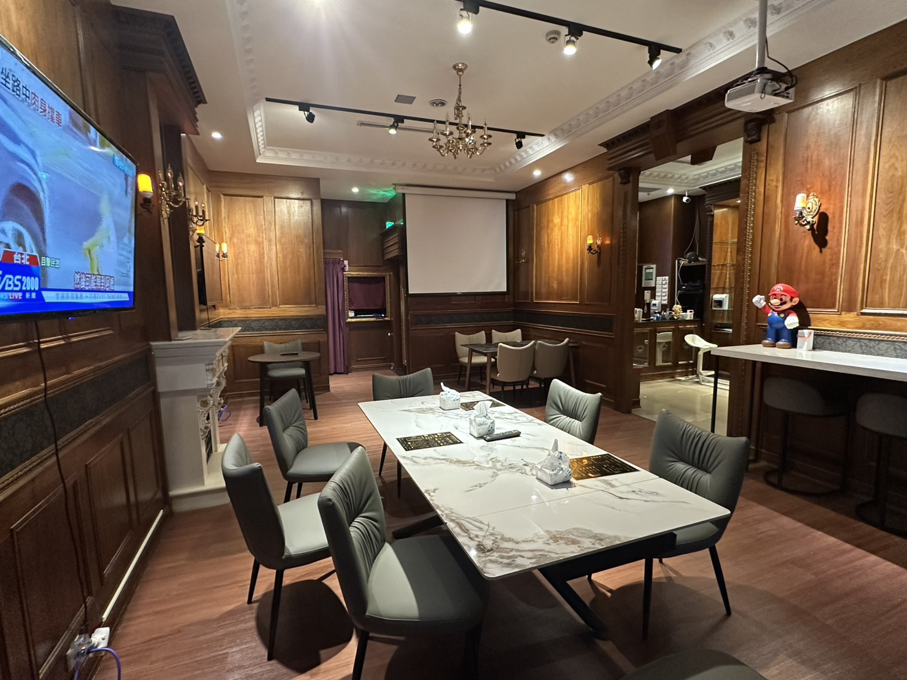
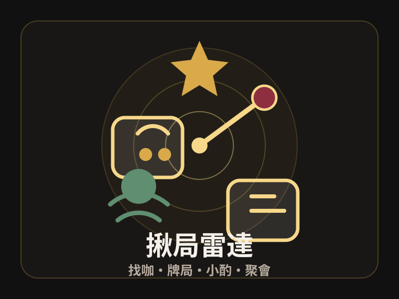

菜單 義大利麵、炸物、水餃、套餐
掃碼進店後開啟
放鬆、聚會、娛樂，一進店就有 JO CLUB 即時助理。
營業時間
14:00-24:00
推薦重點
咖啡・輕食・桌遊・聚會

飲品甜點 咖啡、飲料、甜點、厚片
店內空間 包廂聚會、音樂娛樂、舒適環境
揪局雷達 揪麻將、德州、喝酒、玩牌，一鍵送出需求功能 1
拍照問 JO CLUB
JO CLUB 建議
先拍一張現場資訊
例如菜單、開幕海報、店內空間或 LINE QR Code，系統會協助客人看懂內容並轉成點餐、聚會或會員建議。
功能 2
直接問 JO CLUB
可以直接問我菜單、飲品、輕食、桌遊、包廂聚會、會員權益或 LINE 加入方式。
轉專員接洽
我先幫你整理需求卡
活動、慶生、包場、特殊規劃或私人安排，建議由店內專員確認，這樣比較能配合時間、人數和現場節奏。
可貼到官方 LINE
功能 3
今日推薦
選擇今晚需求
功能 4
我要揪活動
JO CLUB 揪咖入口
想找人打牌、喝酒、玩遊戲，先把需求丟給我們。
不管是揪麻將、揪德州、揪朋友小酌、揪玩牌、桌遊、包廂聚會或臨時想放鬆，都可以先選需求。JO CLUB 會依現場狀況協助安排空間、時段與適合的玩法。
已從官方 QR Code 加入會員後，可直接在這裡送出現場需求，讓店方更快知道你想揪什麼。
想揪什麼活動
可貼到官方 LINE
揪活動狀態
先選想揪的活動
選好活動、時間與人數後，JO CLUB 會更快知道你需要找咖、安排空間或協助控場。
功能 5
JO CLUB 許願池
許願狀態
還沒丟願望
選幾個想玩的方向，再寫一句你想要的玩法，讓 JO CLUB 幫你把聚會變得更有梗。